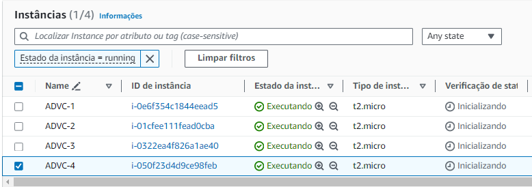

Diagrama da aplicação provisionada:
Passo a passo:
O Ambiente do Desafio deve ser provisionado na Região N. Virginia (us-east-1)
Acesse a conta com os dados fornecidos pela CloudFaster Academy
Em seguida navegue até o serviço de VPC e vamos criar uma VPC
Essa VPC deve ter o endereço 10.77.0.0/16 com 4 Subnets, sendo 2 públicas e 2 privadas.
As subnets privadas devem ter comunicação com a internet via NAT Gateway
A implementação do NAT Gateway deve ser feita com alta disponibilidade
Pode ser utilizado o criado de VPC para provisionar os recursos de forma otimizada e automática.
Após usar o configurador de VPC, aguarde até que seja provisionado todos os recursos, geralmente leva uns 2 minutos até o NAT Gateway ser provisionado, aguarde:
Perceba que a criação otimizada, pular várias etapas que poderíamos realizar manualmente, o bom profissional entende cada uma dessas etapas.
Não tem problema utilizar o configurador, mas reserve um tempo para estudar cada componente da VPC, isso te diferencia no mercado e te ajudar a ter mais confiança no dia a dia.
VPC criada com sucesso.
Ao clicar em Visualizar VPC, você tem acesso a um Mapa de recursos da VPC, que pode te ajudar verificar se você provisionou a VPC corretamente, se tiver algum problema, finalize o LAB, aguarde 2 minutos, abra um novo LAB e refaça a criação da VPC para seguir:
Ainda no serviço de VPC, do lado esquerdo, selecione o componente do Security Group (Grupo de Segurança) e crie um Security Group de nome SG-DO-ALB (que vai ser usado no ELB)
Ao criar o Grupo de Segurança, certifique-se de que esteja criando o Grupo de Segurança na VPC que você criou, aqui está um ponto que vários cometem erros, atenção!
Nesse security group, crie a regra que libere o acesso de entrada a porta 80 para 0.0.0.0/0 (internet)
Finalize a criação do grupo clicando no fim da página em Criar grupo de Segurança:
Repita o processo e crie um Security Group de nome SG-DA-EC2 (que vai ser usado na EC2)
Nesse security Group, libere apenas o SG_ELB como origem de quem pode acessar sua EC2 na porta HTTP / 80.
Essa configuração visa segurança no acesso a nossa aplicação que vai rodar na EC2, apenas o ALB vai ter acesso via HTTP porta 80 na EC2.
Selecione o SG do ALB, e finalize a criação do Security Group.
Se você seguir os passos corretamente, temos agora 2 Security Group criados.
1 para usarmos no ALB
1 para usarmos com as EC2
Vá até o serviço do EC2
Do lado esquerdo no menu, na seção “Balanceamento de carga”, clique na opção “Grupos de destino”
Aqui vamos criar o “Grupo de destino”, também chamado de TARGET GROUP, que faz a comunicação do ALB com as EC2.
Antes de criar o ALB precisamos criar esse recurso, vamos lá:
Clicou em criar grupo de destino, em seguida escolha o tipo de destino.
Aqui vamos trabalhar com “Instâncias”, dê um nome para o seu destino como na imagem de exemplo usamos “destino-ec2-advc”, deixe como HTTP na porta 80, pois é o protocolo e porta que vamos rodar nossa aplicação e deixe como IPv4.
Mais pra baixo, ainda nessa configuração, muita atenção, precisa selecionar a VPC que criamos para este projeto, em verificação de integridade deixe como está, e pode clicar em “Próximo” para criar.
Na próxima tela é uma opção para “Registrar destinos”, como ainda não temos as EC2, não temos nada para adicionar aqui, vamos apenas confirmar clicando no botão “Criar grupo de destino”
Pronto, nosso grupo de destino foi criado:
Você verá uma tela semelhante a esta!
Agora do lado direito, ainda no menu de EC2, na seção “Balanceamento de carga” clique em “Load Balancers” ou “Balanceamento de carga” dependendo do navegador pode traduzir, aqui vamos criar um Application Load Balancer.
Após clicar em Criar load balancer
Devemos selecionar o tipo, vamos usar aqui o Application Load Balancer
Tenha bastante atenção nessa configuração, o índice de erros é alto nesse tipo de laboratório.
Aqui é onde você configura o nome do balanceador.
Seleciona que ele é voltado a internet, ou seja, ele vai receber requisições da internet.
Defina o tipo de endereço IP que ele vai trabalhar, vamos no básico IPv4.
E principalmente, onde o pessoal erra muito, precisa escolher a VPC que criamos, e precisa apontar as subnets públicas. Aqui o pessoal erra bastante.
Mais abaixo, temos a configuração do Grupo de Segurança.
Por isso criamos eles antes, para que vocês selecionem aqui exatamente o Grupo de Segurança já definido antes.
Depois, em “Listeners e roteamento” vamos deixar HTTP porta 80 e vamos definir o grupo de destino, ou seja, para onde vamos encaminhar quem chegar no balanceador, e aqui vamos conectar com o Grupo de Destino, selecione o que acabamos de criar:
Pode descer e embaixo clicar em “Criar load balancer”

Se tudo correu bem, vai ser exibido a mensagem de criação em andamento, se você clicar em listar os Load Balancers, a tela vai listar o balanceador com Status de “Em provisionamento”
Selecionando o balanceador e clicando em detalhes, você pode ver o endereço DNS do balanceador, ainda não tem nada vinculado para responder neste endereço, mas é ele que vamos usar para testar nossa aplicação depois que provisionar as EC2 com a nossa aplicação.
Já salva ele num bloco de notas pois vamos precisar consultar esse endereço logo mais.
Agora ainda no Menu de EC2, na seção de “Instâncias” vamos criar um “Modelo de Execução (launch template)
Considerações para o Modelo de Execução:
Dê um nome para seu modelo, exemplo: template-advc
Em seguida uma descrição ex: teste
Pode marcar a opção de fornecer orientações para usar com EC2 Auto Scaling.
Selecionar a AMI Amazon Linux
Em tipo de instância nesse desafio vamos usar o tipo t2.micro
Não precisa criar par de chave, você não precisa logar na EC2, então marque sem um par de chaves.
Em configurações de Rede, selecione a opção “Não incluir no modelo de execução”, faremos isso depois no Auto Scaling.
Selecione o grupo de segurança para as EC2 criado anteriormente.
Nas configurações de Storage (volume) e Tags de recurso não precisa alterar nada no momento.
Mas precisamos de uma configuração específica nos detalhes avançados, e aqui está outro local de muito erro, preste atenção.
Não se esqueça de passar as instruções de user data para provisionar a aplicação nos dados opcionais dos Detalhes avançados.
Aqui também precisamos marcar a opção que permite a leitura da TAG Name da EC2: “Permitir etiquetas em metadados” precisa ser HABILITADO nos detalhes avançados na hora de criar o modelo de execução.
Abaixo dessa opção, fica a caixa para você colocar o código que será responsável pela execução da sua aplicação web. “Dados de usuário” cole o código a seguir:
Note: Estas 2 ações, são umas das últimas opções da guia de detalhes avançados, role até encontrá-las:- Criar uma VPC com endereçamento 10.77.0.0/16
Código para provisionar a aplicação:
#cloud-config
package_update: true
packages:
- httpd
runcmd:
- wget -O /usr/local/init_faster.sh https://assets.cloudfaster.academy/danrezende/scripts/init_faster.sh
- chmod +x /usr/local/init_faster.sh
- sh /usr/local/init_faster.sh
- service httpd start
- chkconfig httpd onClique em “Criar modelo de Execução”
E essa tela será exibida:
Clique em visualizar o modelo de execução e está algo como esta tela:
Em ainda no menu de EC2, navegue até do lado esquerdo lá em baixo na seção de Auto Scaling, clique em Grupos Auto Scaling
As configurações que vamos fazer aqui, vão definir quantas instâncias EC2 serão provisionada:
Clique em: Criar modelo de execução.
Agora vamos criar o Grupo de Auto Scaling do Amazon EC2 Auto Scaling
Na etapa 1, vamos definir um nome para o seu grupo de autoscaling, exemplo: asg-advc, depois selecione o modelo de execução criado anteriormente e avance.
Na Etapa 2, vamos configurar a rede que será usada para provisionar as EC2 pelo serviço do Auto Scaling, selecionar a VPC que você criou, e selecionar as 2 subnets privadas que foram criadas.
Nesse ponto queremos que as nossas instâncias EC2 sejam provisionadas na subnet privada, pois quem vai ficar exposto para internet é o ALB (Balanceador de carga), as instâncias EC2 ficaram na subnet privada para maior segurança.
Na etapa 3, vamos configurar o balanceador de carga, marque a opção de Anexar a um balanceador de carga existente, na caixa abaixo, marque o Grupo de Destino criado anteriormente.
Desça até a opção de “Verificações de integridade” e ative as verificações
Clique no próximo.
Na etapa 4, defina a capacidade desejada, pode definir como 4.
Em escalabilidade, deixe o mínimo de 4, e máximo de 8.
Clique no botão próximo.
Depois novamente em próximo.
Não precisa adicionar TAG para esse teste e em seguida revise e clique em “Criar Grupo de Auto Scaling”
Se tudo ocorreu bem, você vai ver o status:
Se você for rápido, mudar de serviço, listar as instâncias EC2, você vai ver as 4 máquinas de uma vez, subindo automagicamente, assim:
Nesse momento as instâncias EC2 já serão criadas.
Aguarde de 2 a 3 minutos até que elas estejam saudáveis.
O próprio grupo de execução que criamos, fará o trabalho de registrar as instâncias EC2 no target group do Balanceador de carga.
Sendo assim, em alguns instantes você pode testar o endereço de DNS do Application Load Balancer no navegador que você já deve ter resposta do serviço web.
Faça um passo adicional enquanto as instâncias são provisionadas.
Vá até a lista de instâncias EC2, e nomeie as instâncias, para que você tenha referência de qual máquina está acessando quando testar a aplicação.
Exemplo:

Após as instâncias estarem devidamente nomeadas e no status de “Executando”, vamos pegar o endereço de DNS do ALB e testar, lembre-se aqui pode demorar uns 2, a 5 minutos até a EC2 ligar, o script que instala a aplicação subir, o serviço na porta 80 ficar disponível, ser registrado no ALB, pra poder funcionar.
Após esperar uns 2 minutos:
Vá até o menu do Load Balancer à esquerda, selecione o load balancer e copie o endereço de DNS, será algo semelhante a este:
Copie o endereço e cole no navegador.
Observe pois talvez o seu navegador, Google Chrome costuma fazer isso, vai inserir um HTTPS na URL, e nesse momento a aplicação ainda não está pronta para HTTPS, precisa usar HTTP para este teste.
Teste a aplicação no navegador.
Fique dando F5 no navegador pois hora ou outra ele vai balancear o tráfego e você vai se conectar em outra instância.
Se você observar, o ID da instância vai mudando conforme o balanceamento de carga vai acontecendo, uma página semelhante a esta será exibida:
Teste a resiliência, desligando uma instância e observe se o EC2 Auto Scaling vai provisionar uma nova instância no lugar após identificar que a instância foi desligada (simulando uma falha), em torno de 5 a 7 minutos uma nova instância será criada, fique observando no painel da EC2.
Exemplo:
Desliguei a instância que tinha nome de ADVC-3
E veja que automaticamente após alguns minutos iniciou-se uma nova instância para repor a instância que foi identificada como não saudável:
Parabéns! Você finalizou esse laboratório!